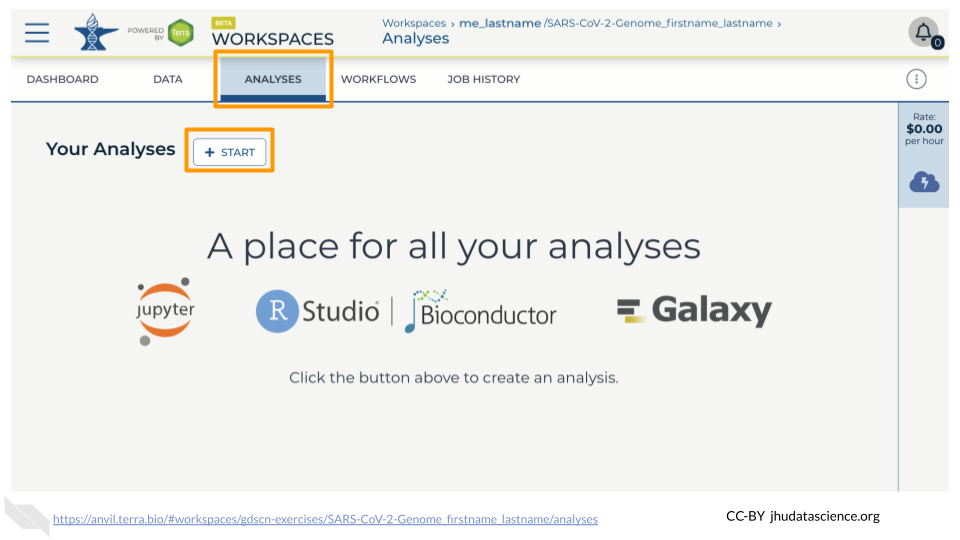
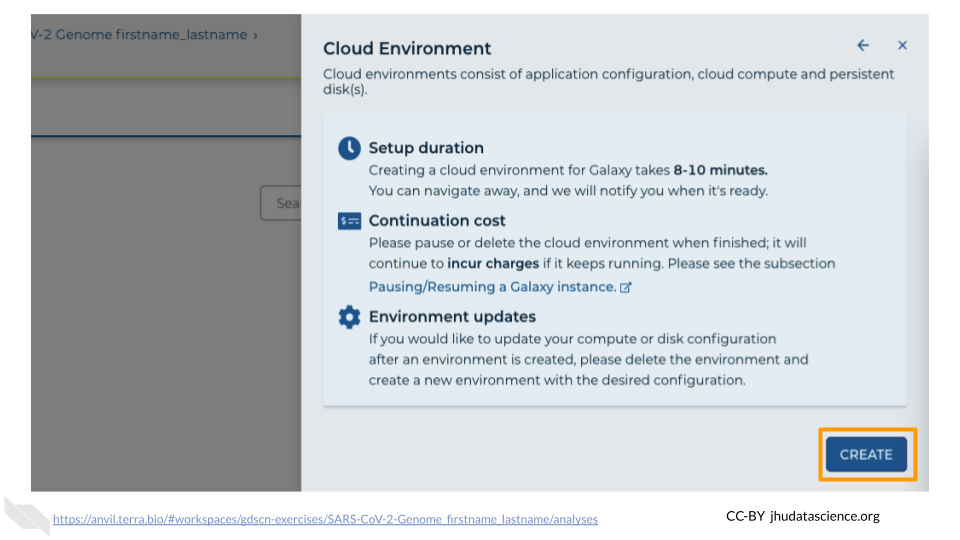
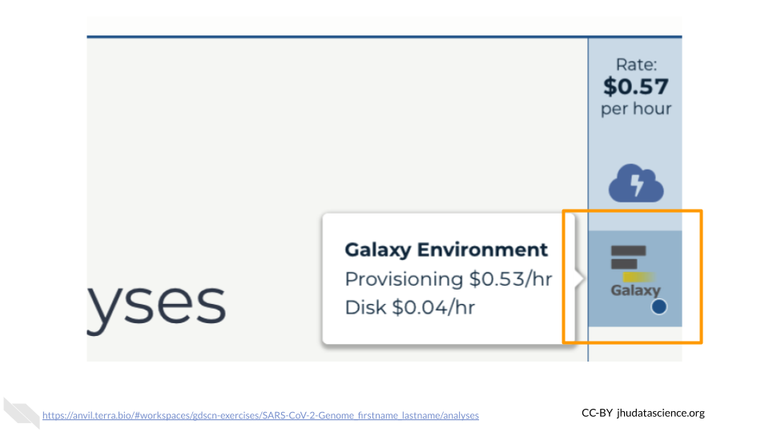
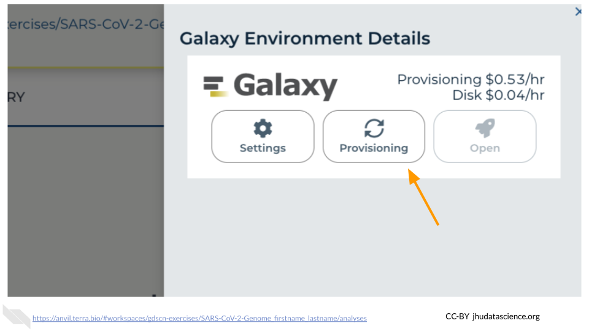
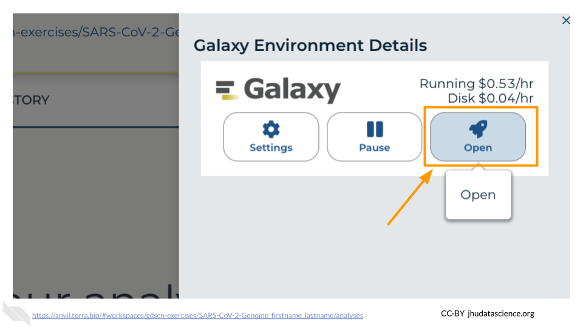
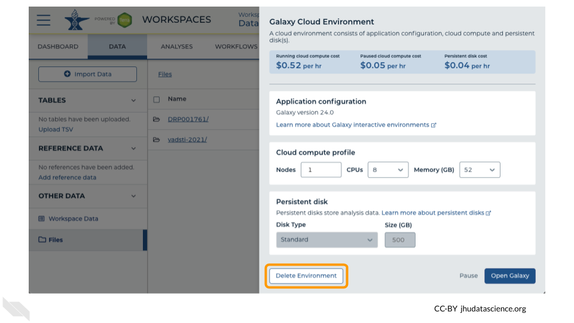

Chapter 14 Using Galaxy on AnVIL
In the next few steps, you will walk through how to get set up to use Galaxy on the AnVIL platform. AnVIL is centered around different “Workspaces”. Each Workspace functions almost like a mini code laboratory - it is a place where data can be examined, stored, and analyzed. The first thing we want to do is to copy or “clone” a Workspace to create a space for you to experiment.
Use a web browser to go to the AnVIL website. In the browser type:
anvil.terra.bioTip At this point, it might make things easier to open up a new window in your browser and split your screen. That way, you can follow along with this guide on one side and execute the steps on the other.
Your instructor will give you information on which workspace you should clone. After logging in, click “View Workspaces”. Select the “Public” tab. In the top search bar type the activity workspace.
Clone the workspace by clicking the teardrop button ( ). And selecting “Clone”.
). And selecting “Clone”.

In the first box, give your Workspace clone a name by adding an underscore (“_”) and your name. For example, “SARS-CoV-2-Genome_Ava_Hoffman”. Next, select the Billing project provided by your instructor. Leave the bottom two boxes as-is and click “CLONE WORKSPACE”.

14.1 Video overview on using Galaxy
Here is a video tutorial that describes the basics of using Galaxy on AnVIL.
14.1.1 Objectives
- Start compute for your Galaxy on AnVIL
- Run tool to quality control sequencing reads
- Stop compute to minimize expenses
14.1.2 Slides
The slides for this tutorial are are located here.
14.2 Starting Galaxy
Galaxy is a free, relatively easy to use bioinformatics implementation package. It changes command line programs into GUI based programs and is a great tool for performing bioinformatics analysis without having to update software or worry too much about coding. In order to use Galaxy, we need to create a cloud environment. This is like quickly renting a few computers from Google as the engine to power our Galaxy analysis.
Currently, you will need to use Chrome or Safari as your browser for Galaxy cloud environments to work.
In your new Workspace, click on the “ANALYSES” tab. Next, click on “START”. You should see a popup window on the right side of the screen. Click on the Galaxy logo to proceed.

Click on “NEXT” and “CREATE” to keep all settings as-is.

Click on the Galaxy icon.

You will see that the environment is still being set up.

This will take 8-10 minutes. When it is done, click “Open”. You might need to refresh the page.

Remember that you can refresh your browser or navigate away at any time. This is because the connection to the environment is in the cloud, not on your personal computer.
You can also follow along with the first ~2 minutes of this video to start Galaxy on AnVIL.
14.3 Navigating Galaxy
Notice the three main sections.
Tools - These are all of the bioinformatics tool packages available for you to use.
The Main Dashboard - This contains flash messages and posts when you first open Galaxy, but when we are using data this is the main interface area.
History - When you start a project you will be able to see all of the documents in the project in the history. Now be aware, this can become very busy. Also the naming that Galaxy uses is not very intuitive, so you must make sure that you label your files with something that makes sense to you.

On the welcome page, there are links to tutorials. You may try these out on your own. If you want to try a new analysis this is a good place to start.
14.4 Deleting Galaxy
Once you are done with your activity, you’ll need to shut down your Galaxy cloud environment. This frees up the cloud resources for others and minimizes computing cost. The following steps will delete your work, so make sure you are completely finished at this point. Otherwise, you will have to repeat your work from the previous steps.
Return to AnVIL, and find the Galaxy logo that shows your cloud environment is running. Click on this logo.

Next, click on “Settings”. Click on “Delete Environment”.

Finally, select “Delete everything, including persistent disk”. Make sure you are done with the activity and then click “Delete”.